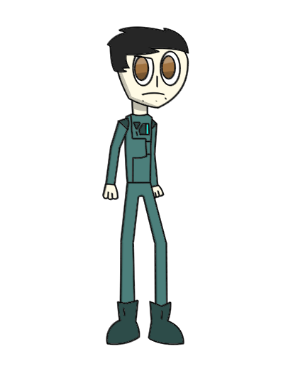

The second cutscene has been finished and The Silence is back as a 3DS game!
I've talked to my brother about the life-spam of the console and he assumed it will last for years so I decided to continue with the 3DS development. I won't reveal all my progress but i can show everyone one of Silence's allies.
Benny Napon

Go back